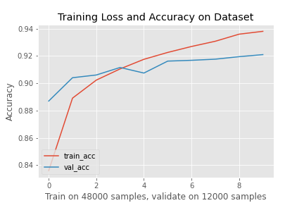

Sahba Bostanbakhsh
In order to classify the Fasion-mnist dataset with good accuracy we need a good model architecture!! the one example could be as simple as this :
For this model, cross-entropy loss is used for computing the loss, Adam is used for optimization, and the model was trined over 10 epoches, the total accuracy is about 91% to 92%.
After training and validating the model the loss/Accuracy vs #samples can be plotted.

From the plot above we can see some overfitting has occurred. This could happen because of many reasons. For example, if we have alot of parameters for training.
However we can reduce overfitting by improving our model or tunning the hyperparameters.
the modle prediction chart: .

the hardes class to classify is shirt! and the reason could be the information gain from the pixels share same hyperparameters as other classes:
The shirt class had the lowest accuracy for both the validation and test set.
lets look at some correct (Green) and incorrect (Red) predictions done by our model.


Below, the 3x3 filters have been visualized.
This part of the project is a bit harder to implement since it requires downsampling and upsampling of an input image.
The layers used are below:
The graph below shows the modle is overfitting.

The reported values for the average precision of the network are below.
AP = 0.5432155628391006
AP = 0.6932388379961033
AP = 0.1567090498345968
AP = 0.8025611932893545
AP = 0.3401661294507566
The sample image below illustrates how the net would classify the parts in an image.